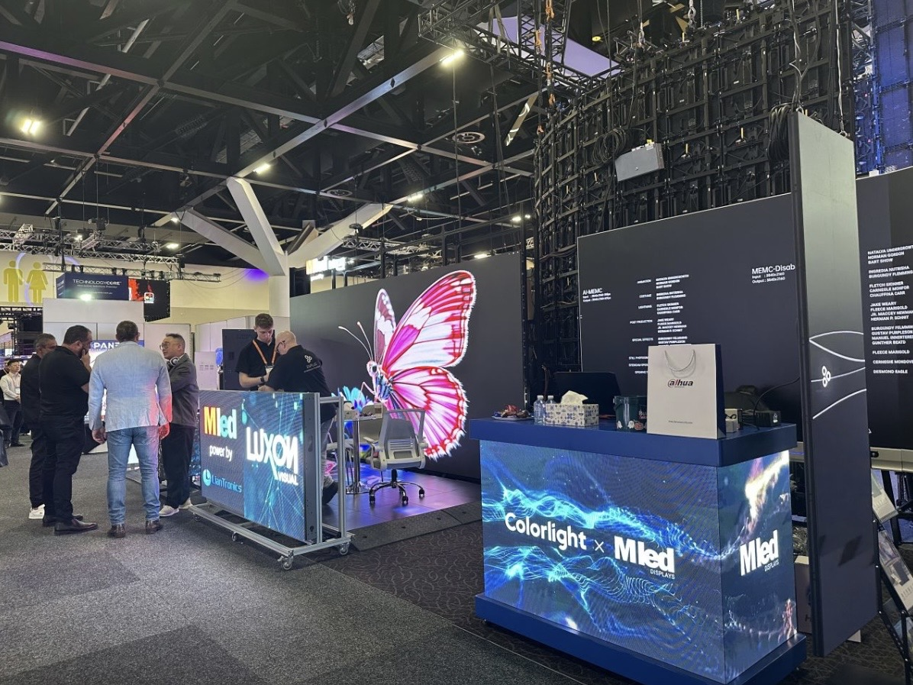

By David
What are LED display financing options? LED display financing options are the ways a buyer can fund a screen purchase without paying the full price upfront, including bank loans, vendor terms, export credit, and leasing. Each has a different cost and a different effect on cash flow. This 2026 guide compares them.
A display purchase rarely fits neatly into a buyer's cash position. The screen is needed now, the revenue it supports may arrive later, and the funding decision sits between the two.
LED display financing options give the buyer a way to bridge that gap. The question is not whether financing is available, it is which structure costs least for the specific cash profile and risk position of the buyer.
A bank loan or an equipment facility is the most common route. The bank advances the purchase price and the buyer repays with interest over an agreed term, with the screen often serving as security.
The attraction is control. The buyer owns the screen from the start, keeps any residual value, and the finance cost is usually the lowest of the available LED display financing options for a business with a strong balance sheet.
| Financing Route | Typical Cost | Best Suited To |
|---|---|---|
| Bank equipment loan | Moderate interest | Established businesses |
| Revolving credit facility | Moderate to high | Flexible short-term needs |
| Vendor payment terms | Low or implicit | Negotiated at the order |
| Export credit support | Low interest | Cross-border purchases |
| Leasing | Higher effective cost | Short-term or upgrade needs |
| Invoice finance | Moderate | Working capital pressure |
Compare the effective cost rather than the headline rate. Fees, arrangement charges, and security requirements all add to the cost of the LED display financing options, and a facility with a low rate and high fees may cost more than one with a higher rate and none.
The supplier is often the cheapest source of finance, because the cost is built into the price rather than charged separately. A deposit followed by a balance on shipment or on delivery spreads the cost without a formal facility.
Negotiate the terms as part of the commercial discussion rather than accepting the default. A supplier who is asked for thirty days after delivery may agree, and the cost of that concession is usually far less than the interest on a bank facility for the same period.
Where the screen is imported, export credit agencies in the supplier's country may support the transaction with insured finance at a favourable rate. This is one of the less visible LED display financing options, and it is often overlooked by buyers who assume it is only available for very large contracts.
Ask the supplier whether export credit support is available for the order. A supplier who routinely uses it can offer terms that a purely domestic facility cannot match, and the buyer's own bank may also be able to structure the transaction with cover.
| Support Type | What It Covers | Typical Condition |
|---|---|---|
| Buyer credit | Finances the purchase | Minimum contract value |
| Credit insurance | Protects against non-payment | Premium payable |
| Bank guarantee | Secures the payment obligation | Issued by the buyer's bank |
| Documentary credit | Payment against documents | Compliant documents required |
| Government scheme | Supports specific markets | Eligibility rules apply |
| Supplier credit | Extended payment terms | Negotiated commercially |
Documentary credit is a payment instrument as much as a financing one, and it protects both sides in a cross-border transaction. It is worth considering where the buyer and supplier do not yet have a long trading history.
The right structure matches the repayment to the cash the screen generates. A screen installed for a revenue-generating advertising contract can support repayments from that revenue, while one bought for internal use is repaid from general cash flow.
Where the revenue arrives in a lump at the end of a season, a repayment schedule with a final balloon may suit better than equal monthly instalments. Most lenders will structure the facility around a realistic cash profile if the buyer explains it.
| Cash Profile | Suitable Structure | Why |
|---|---|---|
| Steady revenue | Equal instalments | Matches predictable cash |
| Seasonal revenue | Seasonal or balloon | Matches the cash peaks |
| Project-based revenue | Milestone-linked | Repayment follows receipt |
| Advertising contract | Revenue-linked | Repaid from the contract |
| Internal use | Straight loan | Repaid from general cash |
| Grant funded | Bridge then settle | Bridged until the grant lands |
Explain the cash profile to the lender rather than accepting the standard product. A structure that matches the revenue is easier to service, and a facility that is comfortable to service is far less likely to become a problem.
Compare the LED display financing options on the total cost of funds, not on the headline rate or the monthly payment. A lower monthly payment over a longer term usually costs more in total, and the monthly figure hides that difference.
Build a simple comparison that converts each option to a total cost over the same period. That single table usually reveals that the cheapest monthly payment is the most expensive facility, which is the opposite of what the sales conversation suggests.
Each mistake raises the cost of funds for the same screen. Choosing among the LED display financing options is a comparison exercise, and the buyer who does the comparison pays less than the buyer who accepts the first offer.
Financing requires documentation, and the lead time matters as much as the cost. A facility that takes six weeks to arrange delays the order, while one that can be drawn quickly keeps the delivery on schedule.
Start the financing conversation at the same time as the supplier negotiation rather than after the order is placed. The two are linked, and a buyer who arranges finance first can negotiate the payment terms with the funding already in place.
Financing requires documentation, and the lead time matters as much as the cost. A facility that takes six weeks to arrange delays the order, while one that can be drawn quickly keeps the delivery on schedule.
Start the financing conversation at the same time as the supplier negotiation rather than after the order. A buyer who arranges finance first can negotiate the payment terms with the funding already in place, which strengthens their position on both fronts.
Keep the comparison of led display financing options with the procurement file. When the facility is reviewed or renewed, the original comparison shows why the structure was chosen and whether the assumptions still hold.

For this requirement our range covers it directly: the X Series (front/rear service, common parts across platforms) and the series overview for spare-part lists.
Send us your order value and cash profile, and we will outline the financing structures that fit.
Request Financing OutlineChat on WhatsApp